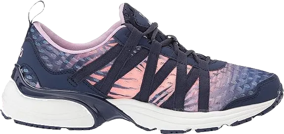
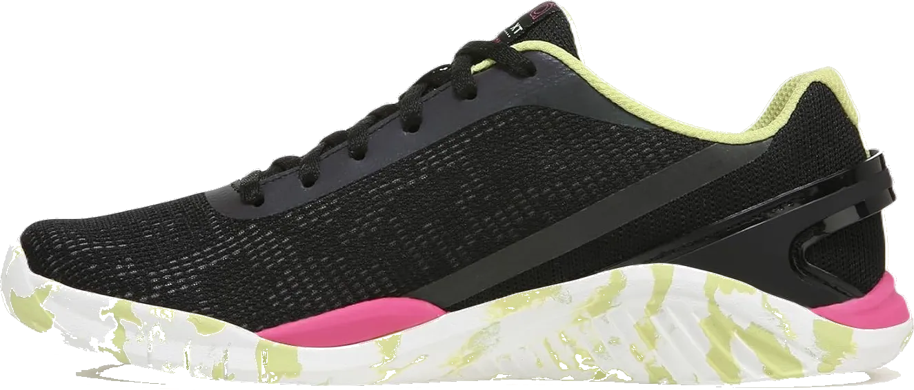
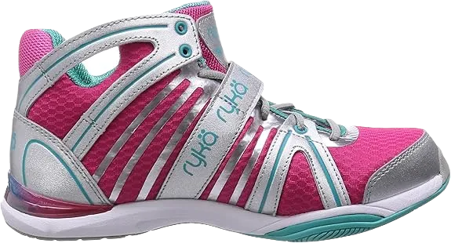
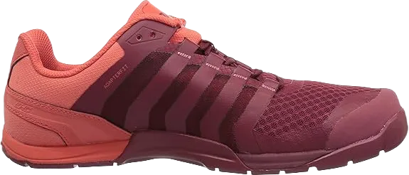

10+ Best Shoes for Step Aerobics 2024
Today, we’re diving into the best shoes for step aerobics, perfect for anyone engaged in gym activities or exercise routines. These shoes are designed to provide you with the motivation you need, thanks to their exceptional softness and comfort.
We’ll cover a variety of options that stand out for their colors, quality, and price ranges, ensuring you have access to high-quality footwear at reasonable prices. It’s important to find shoes that not only deliver comfort but also enhance your performance. We understand the impact a great pair of shoes can have on your fitness journey, so let’s explore the best choices available that can help you take the next step in your active lifestyle.
-
#1
Women’s aqua sports sneakers
When it comes to shoes designed for exercise and workouts, they are also perfect for jogging or morning walks, offering the comfort you need. These shoes excel in quality and durability, ensuring they can withstand the rigors of your fitness routine. Their impressive construction guarantees that you’ll enjoy high performance with every step you take.
You’ll find a fantastic range of colors and designs, with breathable materials that effectively wick away moisture and sweat during your workouts. This feature helps keep your feet cool and comfortable, providing a sense of love and care for your feet as you move.
Additionally, these shoes are designed to protect you from injuries and hazards like slipping, allowing you to focus on your activity without worry. Their comfortable fit and cushioning support make them ideal for running and walking, ensuring you experience the softness you need to build endurance while keeping your feet safe and secure. -
#2
Ryka women’s hydro sport
.webp)
Shoes play a crucial role for anyone committed to their health, especially when it comes to workouts and walking sessions. These shoes are designed to handle the rigors of physical activity while providing the support your feet need. They are effective in alleviating stress and reducing back pain, making them a great choice for active individuals.
With a focus on quality and design, these shoes offer excellent breathability, allowing them to absorb water and sweat during use. This breathable feature helps keep your feet comfortable and dry, enhancing your overall workout experience.
Ease of wear is another significant advantage, as these shoes are simple to put on and take off without causing stress to your feet. Equipped with rubber soles both inside and out, they provide cushioning and softness, ensuring a pleasant wearing experience. Furthermore, these shoes offer superior grip on the floor, helping to prevent slips and ensuring you can maintain your balance during activities. -
#3
Ryka women’s influence cross training shoes
Shoes designed for sports are also ideal for daily wear, promoting good health and encouraging an active lifestyle. These high-quality shoes offer excellent support, helping alleviate back pain within a few days of use. With their superior resistance, they provide stability on slippery surfaces, allowing you to move with confidence and energy.
The impact of these shoes on users is significant, especially for those who incorporate them into their daily routines to maintain their health. They excel in quality, color, and shape, ensuring that your toes have the comfort and softness they deserve.
While many shoes claim to offer various benefits, these stand out for their durability and flexibility. They boast a range of designs and fits that cater to your feet, making them a top choice for comfort and support during both sports and everyday activities. -
#4
New balance men’s mx608v4
.webp)
People love wearing shoes, and we’re excited to introduce a collection that offers a great range of options and features designed to provide comfort for your feet. These shoes are crafted to deliver softness and alleviate any discomfort you may have experienced before wearing them.
Designed with breathability in mind, these shoes effectively address sweat issues during workouts or long hours at work, ensuring you receive full support. We understand how essential it is for you to have footwear that excels in comfort and performance, providing the best results with every step you take.
Incorporating leather elements, these shoes not only boast an attractive design but also offer protection and support for your feet. They are perfect for workouts, delivering optimal solutions to keep your feet safe and comfortable throughout your activities. -
#5
K-Swiss men’s st329 cmf training shoes
.webp)
Shoes that provide a wonderful feel of softness and comfort are essential for any wardrobe. We are excited to present a selection of footwear designed with high-quality materials and breathable features, ensuring you get the comfort you seek. These shoes are perfect for individuals looking for stylish options that can also support the weight you carry during workouts or exercise.
These shoes excel in providing comfort while effectively absorbing sweat generated during your workouts or walks. Whether you're looking for fashionable footwear or something to enhance your comfort, these shoes deliver on both fronts, offering features that you might overlook.
With excellent midsole and outsole construction, these shoes offer the best impact protection for any injuries you may encounter. They are designed to address and alleviate any pain or discomfort, making them a reliable choice for your active lifestyle. -
#6
Under Armour men’s micro g engage big logo 2
.webp)
Shoes designed for walking, running, and various sports activities offer the best comfort and quality needed to tackle any challenges you might face. These shoes excel in providing a wide range of designs and colors, ensuring both style and durability for all your athletic endeavors.
While they maintain a level of traditional comfort, these aerobics shoes come equipped with outstanding features to enhance your performance. The softness provided by the soles ensures a comfortable experience during your sports activities, allowing for ease of movement.
Incorporating foam in the midsole and backsole, these shoes deliver exceptional support and cushioning for your feet. This thoughtful design ensures that your toes have the necessary support to function properly, making them an ideal choice for your active lifestyle. -
#7
Ryka women’s tenacity cross trainer shoes
These shoes excel in durability, offering an impressive range of comfort qualities that cater to both high and low-profile preferences. It's essential that these shoes not only meet your needs but also align with your personal taste.
Designed to provide optimal comfort and softness, these shoes incorporate a system that addresses all the features you desire. Their lightweight construction plays a significant role in delivering outstanding results during your workouts, ensuring you can move freely and comfortably.
With a stylish design and high-quality materials, these shoes effectively alleviate various pains, including back pain. They are perfect for walking and general wear, featuring excellent resistance and water-absorbing qualities that protect you from slipping while providing a secure grip on the floor. -
#8
Inov- 8 women’s f-lite 235 v2 cross trainer shoes
We’re discussing shoes that excel in color and design, yet also offer excellent pricing and flexibility to alleviate toe pain and provide comfort for your feet. These shoes are ideal for those who need to stand for long hours, as they support you during exercise without causing pain or discomfort.
Designed to provide technical support, these shoes are a great solution for back pain recovery. They come in a variety of styles and are affordably priced, making them accessible for everyone seeking comfort in their footwear.
With high-quality construction and water-resistant features, these shoes protect you from slippery surfaces, reducing the risk of falls. The rubber soles contribute significantly to your overall comfort, ensuring you achieve the best possible results in your daily activities. -
#9
Nike men’s mecton 4
.webp)
We aim to provide you with the best shoes designed to alleviate your pain and enhance your comfort. These shoes are particularly effective at relieving back pain, thanks to their rubber soles that offer a soft and cushioned feel.
These shoes are not only functional but also stylish, making them a great choice for anyone looking to look good while staying comfortable. You can find these shoes at an affordable price without compromising on quality, ensuring that they remain durable over time.
We understand the importance of comfortable footwear, which is why we’re committed to offering shoes that provide exceptional durability and support for your feet. With these shoes, you can enjoy a comfortable wearing experience throughout the day. -
#10
ASICS men’s gel quantum 180
.webp)
You should consider these shoes, which excel at absorbing moisture while providing excellent breathability for your comfort. We’re discussing the best footwear that comes with a wide variety of colors and designs, specifically crafted to address your needs. These shoes are designed to alleviate back pain and enhance your overall fitness.
We understand that you need shoes that offer great flexibility and comfort, especially during your demanding exercise sessions. With these shoes, you can expect an exceptional level of support, ensuring a more comfortable experience while you engage in various activities.
These shoes shine in two key areas: providing relief for your toes and alleviating back and ankle pain. They are equipped with features that support your ankles, helping to distribute your weight evenly, and their lightweight design ensures you can wear them comfortably for extended periods.